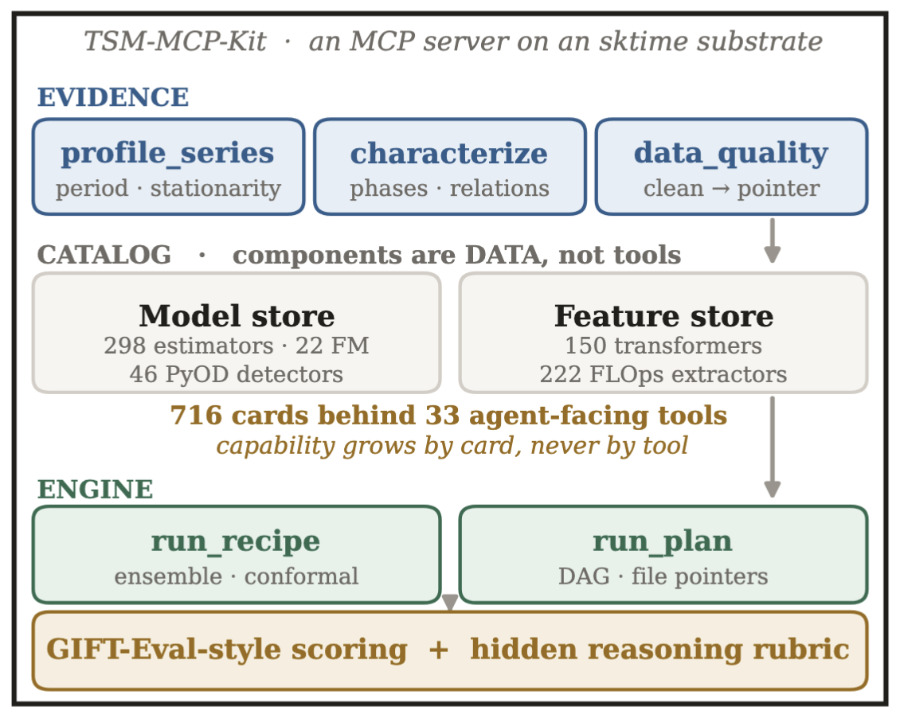
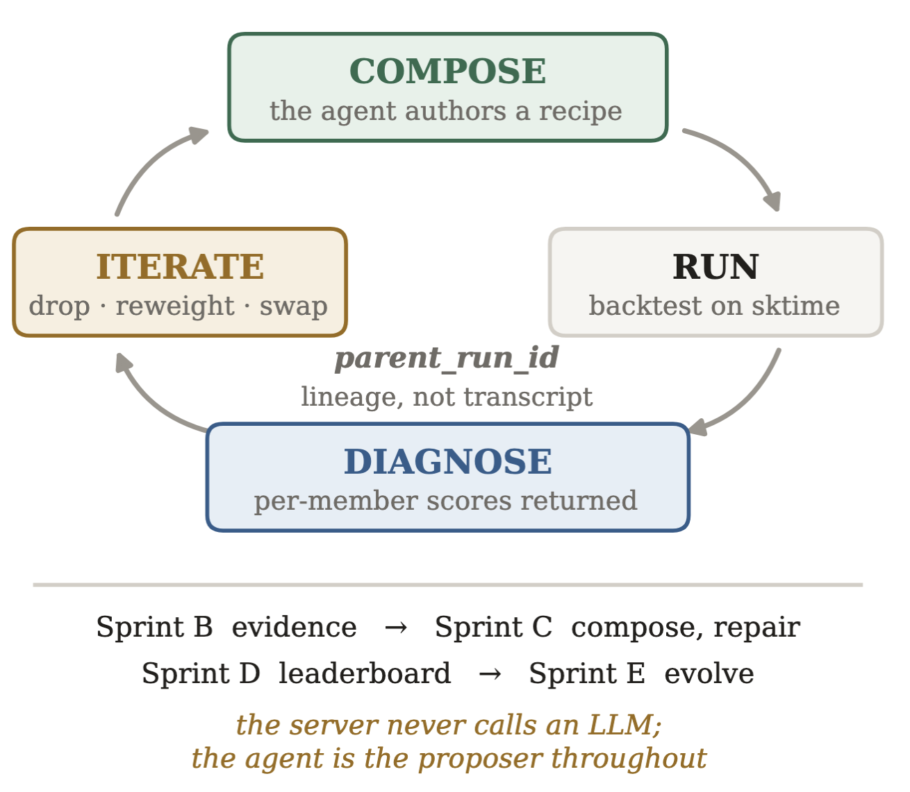

Components are data.
Not tools.
Explore estimators, transformers, detectors and feature extractors as catalogue cards. Grow the argument space without growing the tool list.
Agentic scientific discovery for time series with the Model Context Protocol. Inspect the evidence. Compose an experiment. Learn from what happens next.
This lab asks a sharper question: what must a server expose so an agent can run a real model-discovery campaign—and how do we grade its reasoning?
Explore estimators, transformers, detectors and feature extractors as catalogue cards. Grow the argument space without growing the tool list.
Read period, stationarity, channel correlation and missingness. The server reports the facts; the agent makes a parameter choice it can defend.
Evaluate lookback, context, horizon and thresholding against evidence-derived references. A good score alone does not establish sound reasoning.

TSM-MCP-Kit is an MCP server on an sktime substrate. Evidence tools report facts about the series; catalogue components are exposed as data rather than separate tools. Its 716 components sit behind 33 agent-facing tools. The engine executes recipes and plans, with GIFT-Eval-style scoring and a hidden rubric that evaluates the reasoning behind parameter choices.
Adapted from Figure 1(a) of the lab proposal. Select the image to view it full size.Follow a recipe from first hypothesis to a repaired ensemble. Select a step to inspect what the agent does.

The agent authors a recipe, backtests it on sktime, reads per-member scores, and revises the experiment by dropping, reweighting or swapping components. Each revision records parent_run_id, preserving lineage as state rather than a transcript.
Sprint B establishes the evidence, Sprint C composes and repairs, Sprint D evaluates on the leaderboard, and Sprint E evolves candidates. The server never calls an LLM; the agent remains the proposer throughout.
Adapted from Figure 1(b) of the lab proposal. Select the image to view it full size.A small taste of Sprint B. Choose a lookback from the evidence, then inspect the reasoning reference.
The lab’s reference is 1–3× the measured period. Context must cover lookback. This is a teaching heuristic, not a model-performance guarantee.
The proposal reports these hidden-rubric scores for reasoned choices versus defaults. They measure the decision chain, not predictive accuracy.
And honest outcomes matter: the repaired ensemble reaches sMAPE 0.150, close to its best member’s 0.149. Parity, rather than a win.
Five presenters spanning industrial AI, time series, multiagent systems and evaluation.
Python and Docker Compose familiarity will help. Prior sktime, AutoML or foundation-model experience is not required. Classical paths run on CPU; no GPU needed.
Local Docker delivery is designed to work offline once images are downloaded. Hosted foundation models require remote access; the proposal plans to supply keys.
Take-home challenges: covariates, shift-aware evaluation, calibration scoring and ensembles that beat their best member.